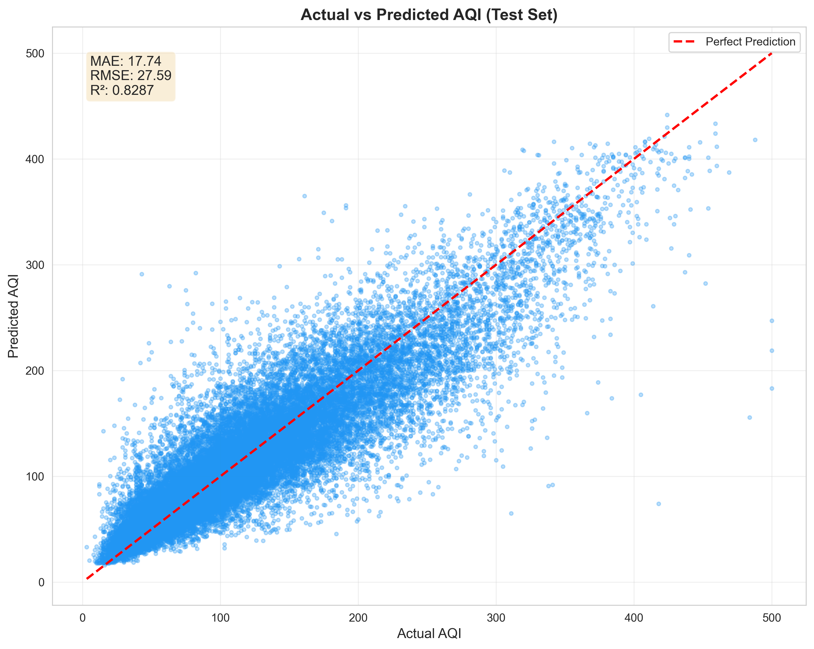
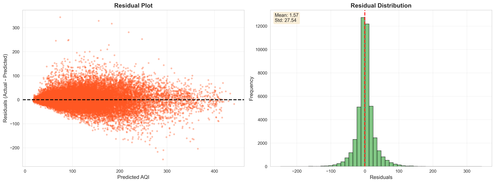
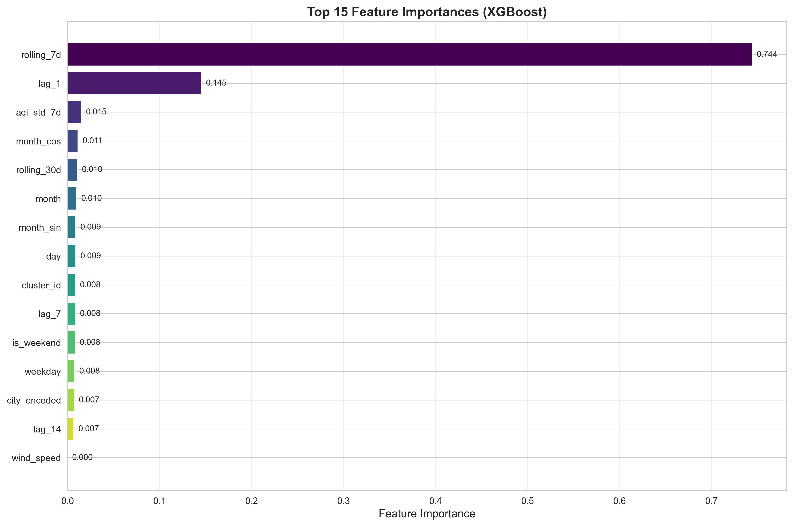
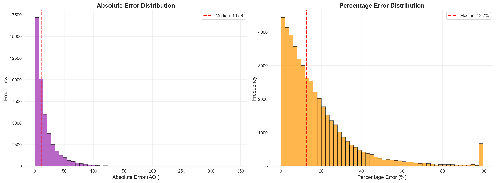
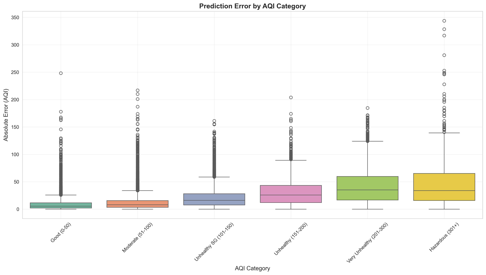
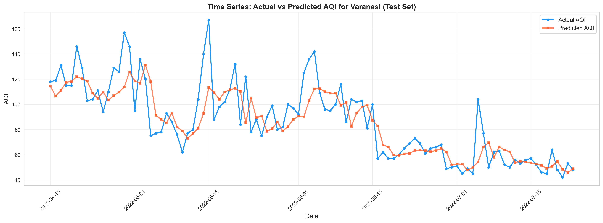

XGBoost AQI Forecasting Model - Comprehensive Performance Analysis
Scatter plot showing how well the model's predictions align with actual AQI values. Points closer to the red diagonal line indicate better predictions. The tight clustering around the line demonstrates strong model performance across all AQI ranges.

Left: Residual scatter plot shows prediction errors are randomly distributed around zero, indicating no systematic bias. Right: Histogram shows residuals follow a normal distribution centered at zero, confirming model reliability.

Bar chart ranking the top 15 features by their impact on predictions. Lag values (lag_1, lag_7) and rolling averages are most influential, followed by weather features (temperature, humidity, wind speed) from the live Supabase data.

Left: Absolute error histogram shows most predictions have errors under 30 AQI units. Right: Percentage error distribution indicates the model maintains consistent accuracy across different AQI magnitudes.

Box plot showing prediction accuracy across different AQI health categories. Model performs consistently well across "Good", "Moderate", and "Unhealthy" ranges. Higher variability in extreme categories is expected due to fewer samples.

Sample time series comparison showing actual (blue) vs predicted (orange) AQI for Varanasi over 100 days. The close tracking demonstrates the model's ability to capture temporal patterns and trends in air quality.

Loading report...